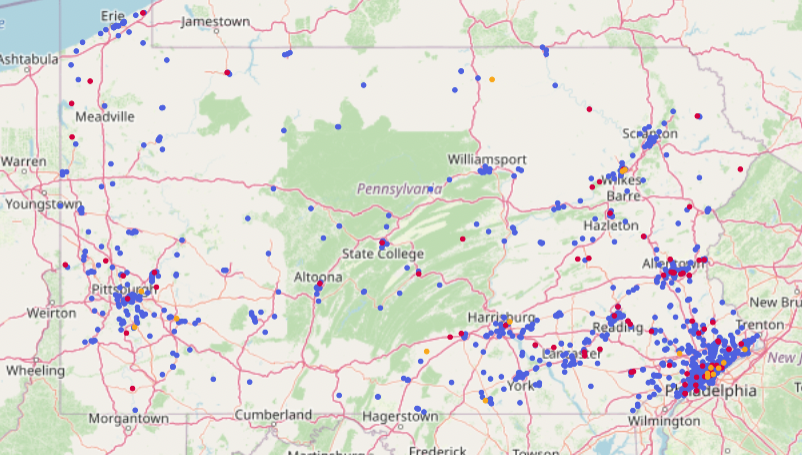
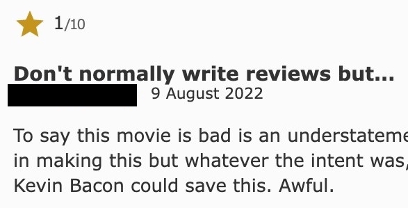
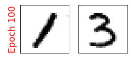
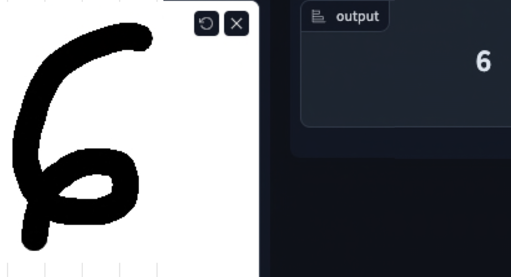

Programming skills and portfolio of projects
I am self-taught in Python programming and am proficient in using the standard libraries as well as: Pandas, Numpy, statsmodels, PyTorch, Scikit-learn, XGBoost, Matplotlib, Seaborn, Chart Studio, Natural Language Toolkit. I am also proficient in SQL (PostgreSQL, MySQL), technical writing in LaTeX, and use of Microsoft Office Suite.
I am have knowledge of data science principles and best practices, including: data exploration and visualization, data cleaning, feature engineering, and dimensionality reduction. I am also familiar with theory and implementation of a variety of machine learning models:
- Supervised and unsupervised learning: linear models, KNN, SVM, decision trees, clustering.
- Ensemble methods: bagging, random forests, boosting techniques.
- Neural networks: FCNN, CNN, RNN, GAN, transformers, diffusion.
- Time series forecasting models: ARIMA, Prophet, Neural Prophet, LSTMNN.
Please peruse some of my recent projects:

PA bicycles crashes analysis, 2002-2021
A project involving a PENNDOT dataset consisting of around 26,000 bicycle crash incidents taking place in Pennsylvania over the years 2002-2021. I gather and clean the data, perform data analysis and visualization, and build and evaluate machine learning models in order to predict severe cyclist injury or fatality.

Movie review sentiment predictor
A model which classifies the sentiment of a user's movie review as positive or negative. The model is version of DistilBERT which was fine-tuned on a database of IMDb movie reviews.

Handwritten digit generator
A model which generates facsimile images of handwritten digits. The model is a Wasserstein Generative Adversarial Network with Gradient Penalty (WGAN-GP) trained to mimick the MNIST handwritten digit database.

Handwritten digit classifier
A model which classifies handwritten digits. The model is a Convolutional Neural Network (CNN) trained on the MNIST handwritten digit database.

Tessa with Stable Diffusion
A diffusion model which I trained to generate art involving my dog, Tessa. The model was fine-tuned from Stable Diffusion v1.5 using the "Dreambooth" method.